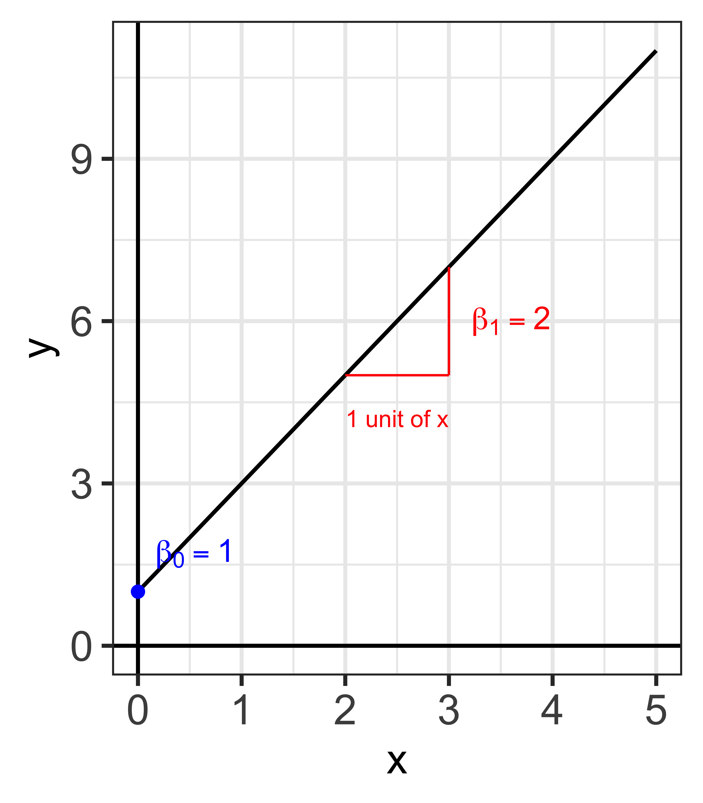

01-1: Univariate Regression: Introduction
Why do we want ceteris paribus causal impact?
Transcript
Let’s make ceteris paribus concrete, with a decision you might actually face. You have been admitted to University A, which is better and more expensive, and to University B. You want to know what A buys you in future income. So you find the data on screen: A’s graduates average about a hundred and thirty-one, B’s about ninety, a difference of roughly forty-one. Now the question at the bottom is the only one that matters. Is that forty-one what you would gain by choosing A? Sit with it before clicking on. Almost everybody’s instinct is yes, and the rest of this slide is about why the instinct is wrong.
Quality of College
You
- have been admitted to University A (better, more expensive) and B (worse, less expensive)
- are trying to decide which school to attend
- are interested in knowing a boost in your future income to make a decision
You have found the following data
University | average income | sample size |
|---|---|---|
A | 131.26 | 500 |
B | 90.31 | 500 |
Question
Should you assume that the observed difference of 40.94 is the expected boost you would get if you are to attend University A instead of B?
Transcript
Here are two quantities written side by side, and the gap between them is the whole lecture. Number one is the raw difference: the average income of A’s students minus the average income of B’s students. That is what the table just gave you. Number two holds ability fixed at six, your ability, and asks what A pays compared with B for the same person. Which do you want? Obviously the second, and the callout says why. Your innate ability does not improve because you enrolled somewhere. You want to change the school and nothing else. Number one changes the school and the student at the same time.
Let’s say your ability score is 6 out of 10 (the higher, the better),
\text{(1)}\;\; E[inc|A] -E[inc|B] \;\;\; \text{(the raw difference in the table)} \text{(2)}\;\; E[inc|A,ability=6] -E[inc|B,ability=6]
Which one would you like to know?
Transcript
Now look at what is actually in the data. Each dot is a person, ability along the horizontal axis, income up the vertical. The two sloped lines are the two universities: at any given ability the red line sits above the blue one, and that vertical gap is what A is worth. Then there are the two horizontal lines, which are just the group averages, and their gap is visibly bigger. Why? Look at where the dots sit. A’s students are bunched to the right; they had higher ability before they ever enrolled. The horizontal lines compare different kinds of people. The sloped lines compare like with like.

Transcript
Let’s put numbers on that picture, because the size of the mistake matters. A’s students average an ability of seven, B’s average five, and every point of ability is worth ten of income. So two points of ability is twenty of income before school does anything at all. And at the same ability, A pays sixty against B’s forty, so the true ceteris paribus effect is twenty. The observed gap was about forty-one. Twenty of school, twenty-one of ability. Read the fragment: take the raw number at face value and you value University A at roughly double what it is worth. Getting from the first number to the second is what this course is for.
A’s students average an ability of 7, B’s average 5, and each point of ability is worth 10 of income. At the same ability, A pays 60 and B pays 40.
- (1) the gap between the two horizontal lines is 40.9 ← what you see
- (2) the gap between the two sloped lines is 20 ← what attending A does for you
- the remaining 20.9 is ability, not school